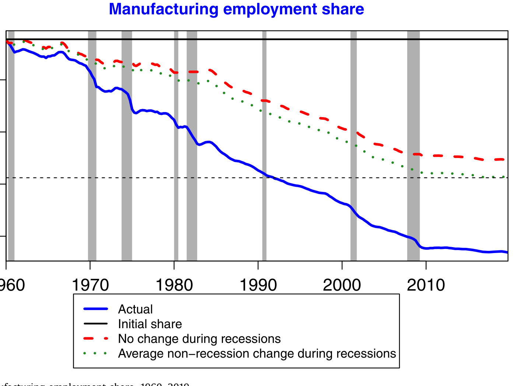
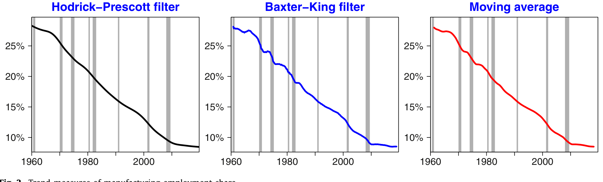
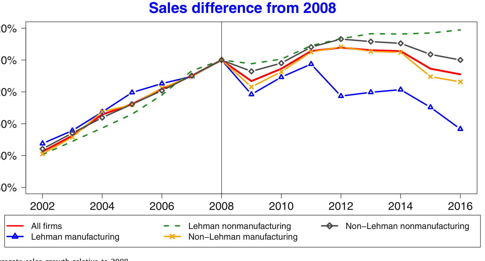
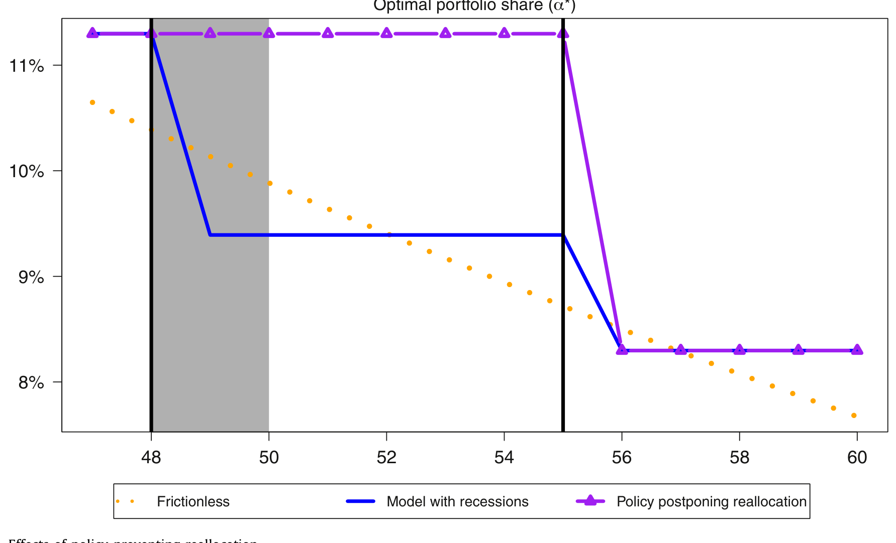
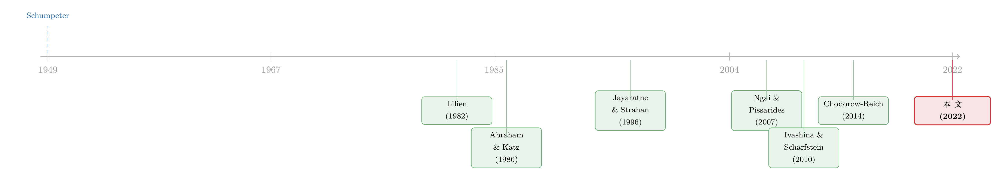

为什么衰退总在悄悄改写一国的产业版图？——信贷再配置那条暗线
本文读的是 Howes (2022, Journal of Financial Economics)：美国制造业就业份额从 1960 年的 28.9% 一路跌到 2019 年的 8.4%，而这场长跑式的衰退，竟有一半以上发生在只占 12.5% 时间的「衰退期」里。作者用雷曼倒闭（2008）和美国跨州银行放松管制（1980 年代）两个自然实验论证：衰退之所以加速产业变迁，是因为它打断了旧的「企业—银行」关系，而新建的信贷会系统性地绕开制造业、流向服务业——这就是「信贷再配置渠道」。
1 一条被「藏」在衰退里的长期趋势
先看一个几乎人人都知道、却很少有人细想的事实：过去六十年，美国制造业在不断萎缩，服务业在不断膨胀。这是发展经济学里最经典的「结构变迁 (structural change)」，从农业到工业再到服务业，似乎是任何一个经济体长大的必经之路。
但 Howes 把这条曲线放到放大镜下看，发现了一个反常的细节：制造业份额的下滑并不是匀速发生的。它一到衰退就「跳水」，平时却相对平稳。

Figure 1: Change in U.S. manufacturing employment share, 1960–2019
如图 1 所示，实线是真实的制造业就业份额，灰色阴影是 NBER 定义的衰退期。作者做了一个很巧的反事实：如果衰退期间份额「冻结不动」（虚线），那条线会高高地悬在真实曲线上方。算一笔账——1960 到 2019 年制造业份额总共掉了 20.5 个百分点，其中非衰退期贡献了 10.2pp，而剩下的 10.3pp 全发生在衰退里。换句话说，只占 12.5% 时间的衰退期，承担了一半以上的下滑。
这就抛出了本文的核心悬念：衰退到底只是把「迟早要发生的事」提前引爆了，还是它本身就在永久性地改写产业结构？
2 一半是「真摔」，不是「假摔」
接着，一个自然的问题是：衰退里的这点下滑，会不会只是周期性的波动，等经济复苏就「弹回去」了？如果是这样，那衰退和长期趋势就没什么深层关系——这正是 Abraham and Katz (1986) 对 Lilien (1982)「部门转移 (sectoral shifts)」假说的著名批评：纯周期性的机制，也能制造出「衰退里行业集中下滑」的假象。
为了回答这个问题，作者把制造业份额拆成「长期 (secular)」和「周期 (cyclical)」两部分，用了一整套趋势—周期分解的方法互相印证：

Figure 2: Trend measures of manufacturing employment share
- Chodorow-Reich and Wieland (2020) 的「穿越周期」算法：
45.8% - HP 滤波 (Hodrick-Prescott filter)：
38.5% - Baxter and King (1999) 带通滤波：
80.3% - 三年中心移动平均：
50.3%
四个口径散得是有点开，但中位数 48.1%、均值 53.7%，都指向同一个结论：衰退期间制造业份额的下滑，大约有一半是「真摔」（结构性的），而非「假摔」（周期性的）。这意味着纯周期机制无法解释全部现象——要讲清楚这件事，你需要一个能同时容纳「长期趋势」和「衰退引爆」的理论。
那个理论，作者认为，就是信贷。
3 识别策略（上）：雷曼倒闭这把「手术刀」
但真正关键的一步，是怎么把「信贷」从一堆同时发生的事情里干净地切出来。衰退里什么都在变——需求塌了、信心垮了、信贷也断了——谁是因谁是果？
Howes 的第一把手术刀，是 2008 年雷曼兄弟的倒闭。这个思路来自 Ivashina and Scharfstein (2010) 和 Chodorow-Reich (2014)：雷曼是大量「银团贷款 (syndicated loan)」里的牵头行之一，它一倒，所有在它那里开着「信贷额度 (line of credit)」的公司就突然失去了一个资金来源——这是一个跟企业自身经营好坏无关的外生信贷供给冲击。
具体做法：用 Refinitiv 的 DealScan 银团贷款数据库，匹配 Compustat 的公司财务，比较「雷曼倒闭时手里还握着雷曼信贷额度」的公司，和没有这层暴露的公司，在随后几年里的差别。识别用的是时间 × 行业 × 银行暴露三重变异——尤其是比较制造业和非制造业在同一冲击下的不同命运。
结果非常干净，也非常出人意料。所有失去雷曼信贷的公司，在随后几年都会更努力地去找新贷款；但找到的难易程度，因行业而异：
2009–2016 年间，受雷曼冲击的非制造业公司，每年获得新贷款的概率比基准高出约 16.6 个百分点——这超过了这些公司年均获贷概率的一半。而同样受冲击的制造业公司，只高出 7.6 个百分点。
也就是说，当旧关系被打断、所有人都去重新找钱时，银行把新信贷优先给了非制造业。这不是制造业「没去找」，而是它「找不到」。
这场信贷再配置是有真实代价的。雷曼暴露让制造业公司的销售额和就业各下滑了约 7%，而对非制造业公司几乎没有影响。

Figure 3: Aggregate sales growth relative to 2008
如图 3 所示，相对于 2008 年，暴露于雷曼的制造业企业销售增长被显著拖累。一个冲击，两种结局——这正是「信贷再配置」最直观的画面。
4 识别策略（下）：把实验「反过来做一遍」
然后，一个更狡猾的质疑来了：Abraham–Katz 早就说过，纯周期机制也能让某个行业的衰退集中在萧条期。你怎么证明你看到的不是这个？
这里是本文我最欣赏的一步：作者把实验反过来做了一遍。
如果信贷再配置渠道是真的，那么它有一个能把自己和「纯周期故事」区分开的独特预言：信贷的扩张，应该对经济活动的水平产生与信贷收缩相反的效果（让总量上升），但对经济活动的构成产生相同方向的效果（都把份额推离制造业）。
怎么找一个外生的信贷扩张？答案是 1978–1994 年美国跨州银行放松管制 (interstate banking deregulation)。这套思路始于 Jayaratne and Strahan (1996)：各州在不同年份陆续放开了对外州银行的限制，等于交错地给本地企业「松绑」了信贷。这是一个经典的交错双重差分 (staggered difference-in-differences, DiD) 设计。
结果完美对称：放松管制让一个州的制造业就业份额下降了约 0.13 个百分点，而这个下降完全是由非制造业就业的增加驱动的——对制造业就业本身没有任何影响。
这就把故事钉死了：无论是信贷收缩（雷曼）还是信贷扩张（放松管制），最终都把就业份额推离制造业。信贷供给的变化，对制造业份额有的是长期 (secular) 的、而非纯周期的影响。
（关于关系型借贷如何把「先亏本拉客」算进一国信贷的总账，可参见《银行为什么舍得先亏本拉客？》；关于一个产业退场如何把账单转嫁给当地家庭，可参见《煤矿衰落里的「金丝雀」》。）
5 模型：为什么「再配置」偏偏挤在衰退里？
实证讲清了「是什么」，但还差最后一块拼图：为什么再配置不是平滑地、年复一年地发生，而是一阵一阵地集中在衰退里？这需要一个模型。
Howes 的模型有三块积木：
- 制造业的投入份额随时间外生下降——这来自 Ngai and Pissarides (2007) 的多部门增长框架，是技术进步的结果。
- 企业必须通过和银行建立「关系」才能拿到信贷，而建立一段新关系要付一笔固定成本——这呼应了关系型借贷的大量文献，尤其是 Hachem (2011)。
- 衰退会打断 (separate) 已有的「企业—银行」匹配。
关键的张力，就藏在第 1 块和第 2 块的交互里。我们可以把一段已建立的「企业—银行」关系的价值，写成一个贝尔曼方程式的递归形式（下面是对模型逻辑的提炼，符号为示意）：
而一家银行愿意新建一段关系，当且仅当这段关系的价值盖得过固定成本：
$$ J_t \;\ge\; F $$
直觉是这样一步步推出来的：
第一步，由于制造业的投入份额在长期里持续下降，制造业企业能贡献的盈余 \(\pi_t\) 也在逐年走低，于是 \(J_t\) 在缓慢下沉。终有一天，\(J_t\) 会跌破固定成本 \(F\)——这时银行就不再愿意为制造业新建关系了。
第二步，但这里有个「惯性」：那些早就建立了关系的制造业企业，因为关系已经建好、\(F\) 是沉没成本，银行会继续给它们放贷，哪怕按今天的标准它们早已不值得新建关系。Howes 称这些为「只是因为转换成本带来的惯性才还在拿信贷」的最低生产率制造商。
第三步，也是反转所在：衰退干了一件事——它通过打断匹配（\(\delta\) 上升），降低了再配置的机会成本。平时不舍得切断的旧关系，在衰退里被「外生地」剪断了；而一旦剪断，银行再回头看，发现按今天的 \(J_t < F\)，根本不值得为这些制造业企业重新建立关系。于是新信贷自然流向了 \(J_t\) 更高的非制造业。
所以模型给出的图景是：长期趋势决定了「方向」（信贷迟早要离开制造业），固定成本决定了「节奏」（不是平滑发生，而是攒着），衰退则按下了「触发键」。

Figure 6: Effects of policy preventing reallocation
更要紧的是模型对政策的含义。作者校准模型后模拟了一个反事实政策：在大衰退中重建所有被打断的关系并维持六年——这正是现实中美国财政部 2008–2014 年「汽车业再融资计划 (AIFP)」那类干预的逻辑。如图 6 所示，这种「不让信贷再配置」的政策会把信贷硬塞回那些本该退出的制造业企业。模型算出来：六年里因错配 (misallocation) 累积的产出损失，约等于初始信贷投放的 78%。换算到 AIFP，这相当于 $63bn，远超该计划实际因坏账实现的 $12bn 损失。
这里的微妙之处在于：模型里所有贷款都是约束有效的，不存在 Peek and Rosengren (2005) 那种「僵尸企业 (zombie firm)」式的监管扭曲。让重建关系变得不划算的，纯粹是结构变迁本身。换句话说，哪怕没有任何信用风险、没有任何监管套利，「救助衰退中的夕阳产业」也可能是昂贵的。（关于续贷如何被写成一个无懈可击的均衡，可参见《欠你一千万的人，其实是债主的「人质」》。）
6 文献脉络
把这篇论文放回它所在的坐标系，能看得更清楚。
故事的源头是 Schumpeter (1949) 的「创造性破坏」——他把危机称为「经济生活适应新条件的过程」。这条「资源在衰退中逆周期再配置」的线，经 Davis and Haltiwanger (1992) 对岗位创造与毁灭的度量、Caballero and Hammour (1994) 的清算理论，逐渐成形。但这些研究大多聚焦于单一部门内部的再配置，且常常抽象掉信贷。
另一条平行的线是「结构变迁」本身，从 Kuznets (1957)、Baumol (1967) 一路到 Ngai and Pissarides (2007) 的多部门增长模型——但这条线传统上只谈长期趋势，不碰商业周期。

而把「外生信贷冲击」做成自然实验的方法论，则由 Peek and Rosengren (1997, 2000) 开创（用日本银行在美分支的变异），经 Ivashina and Scharfstein (2010) 提出雷曼冲击、Chodorow-Reich (2014) 用 Census 微观数据做到极致；信贷扩张那一侧，则有 Jayaratne and Strahan (1996) 的跨州管制放松传统。
Howes 的贡献，是把这三条本来各走各路的线拧在了一起：他用信贷再配置，解释了跨部门结构变迁的时机为什么集中在衰退。与 Jaimovich and Siu (2020)（衰退加速岗位极化）、Storesletten et al. (2019)（结构变迁如何改变中国的周期性质）相比，他把因果落在了「信贷可得性 → 长期结构变迁时机」这条具体链条上。
7 评论与延伸（Q&A + 研究方向）
(a) 几个可能的疑问
Q：这和「僵尸企业」文献到底有什么本质区别？
区别在于「谁不该拿到信贷」。在 Peek–Rosengren (2005)、Caballero et al. (2008) 的僵尸企业框架里，是监管扭曲让本不该拿钱的弱企业在萧条里反而拿到了钱。而本文里没有任何监管扭曲、所有贷款都约束有效，让重建关系不划算的纯粹是结构变迁。所以它不是在讲「坏激励」，而是在讲「好激励下的好心政策也可能很贵」。
Q：雷曼实验里，制造业受伤更重，会不会只是因为制造业本来更依赖外部融资、或资产更重？
这是最该担心的混淆。作者的核心论据不是「制造业绝对受伤」，而是两个实验方向相反却结论一致：信贷收缩（雷曼）把份额推离制造业，信贷扩张（放松管制）也把份额推离制造业。一个纯粹的「制造业脆弱性」故事很难同时解释这两端的对称性——尤其是放松管制对制造业就业零影响、却显著抬高非制造业就业这一点。
Q：「一半是结构性的」这个结论稳吗？四个口径从 38.5% 到 80.3% 散得很开。
坦白说，区间确实宽，Baxter–King 的 80.3% 明显是个离群值。但作者用的是稳健的集中趋势：均值 53.7%、中位数 48.1%，都在「一半」附近。而且论文的逻辑只需要「结构性成分不可忽略」即可——只要它不是零，纯周期机制（Abraham–Katz 式批评）就不足以解释全貌。
Q：用 Compustat 上市公司，会不会让结论只适用于大企业？
是的，这是与 Chodorow-Reich (2014) 的一个分工。后者用保密的 Census 微观数据，发现小企业在贷款人受冲击时受伤更重；本文用 Compustat，刻意聚焦跨行业的异质性。两者互补，但本文的外推确实主要落在公开上市的较大企业上。
Q：跨州放松管制是 1980 年代的事，那时制造业还很大，结论能外推到今天吗？
这其实反而强化了作者的机制。模型预言：当制造业基数越大，衰退里失去信贷的制造业企业越多、再配置幅度越大。图 1 里最早几次衰退的下滑确实最猛，正与此一致。大衰退里制造业从很低的基数还能掉那么多，作者归因于那次金融与经济冲击的「异常剧烈」。
Q：78% 这个政策成本数字，可信度有多高？
它是校准模型下的反事实，不是实证估计，应当作为「数量级」而非「精确点估计」来读。作者自己也强调模型是高度风格化的，这笔成本还需与模型范围之外的潜在收益（如供应商网络、破产的死荷损失）相权衡。它真正的价值是提醒：救助夕阳产业的隐性成本，可能比看得见的坏账大得多。
(b) 几个可能的研究问题与提案
1. 把渠道搬到公司债市场
【经济故事】本文用的是银团贷款。但很多大型制造业企业的边际融资其实来自公司债。如果信贷再配置是真的，那么在衰退中，制造业相对非制造业的信用利差应当系统性走阔、新发债占比应当下降——这是一个尚未被直接检验的横截面预言。 【可行性】中。数据有
Mergent FISD+TRACE+ Compustat，识别可沿用雷曼/COVID 等外生冲击做行业 × 时间的 DiD。难点是债券市场的发行人选择偏差比贷款更强。
2. 外资持有人是不是「再配置」的加速器还是缓冲垫？
【经济故事】外国机构投资者对行业的偏好、以及在危机中的「回流本国 (flight home)」行为，可能让衰退中的信贷再配置更剧烈（外资先撤离夕阳产业），也可能相反（外资追逐被低估的制造业）。把外资持有份额作为一个调节变量嵌入本文框架，是个自然的延伸。 【可行性】中。需要
eMAXX/Morningstar 的债券持有人数据按国别拆分，识别可用各国监管冲击作为外生变异。诚实地说，把「外资偏好」与「行业基本面」分开是主要障碍。
3. 用流动性度量直接「看见」再配置发生的那一刻
【经济故事】本文的再配置是从存量结果（贷款概率、就业）反推的。但如果机制成立，衰退中制造业债券的二级市场流动性应当相对恶化——做市商不愿为「方向向下」的行业承担库存。这能把「信贷再配置」从年度面板细化到交易层面。 【可行性】高。
TRACE逐笔数据加上 size-adapted 流动性度量（参见《把「成交价」从「成交量」里解放出来》）即可构造行业 × 月度的流动性指标，事件窗口围绕雷曼或 SVB。
4. AIFP 之外的「定向救助」自然实验
【经济故事】本文的政策成本是模型反事实。能不能找一个真实的、定向救助某夕阳行业的准自然实验，直接估计「救助 vs. 不救助」对后续产业份额的因果效应？例如不同国家在 COVID 中对航空、煤炭等行业的差异化纾困。 【可行性】中偏低。跨国政策差异多，但混淆因素也多，平行趋势难站得住；更现实的是利用同一国内不同行业纾困力度的离散门槛做 RDD。
8 参考文献
我的总评：这是一篇问题漂亮、识别干净、模型克制的论文。它最聪明的地方不是雷曼实验本身（那已被 Chodorow-Reich 等人做过），而是把实验反过来做——用跨州放松管制证明信贷扩张同样把份额推离制造业，从而把「制造业脆弱性」这个最致命的竞争性解释挡在门外。模型也讲究分寸：它不靠监管扭曲、不靠信用风险，只用「长期趋势 × 固定成本 × 衰退打断匹配」就把「再配置为何集中在衰退」推了出来。
要说对识别的担忧：其一，两个实验都是「制造业 vs. 非制造业」的二分，而非制造业内部异质性极大（科技 vs. 餐饮），把它们打包成一个对照组，可能掩盖了真正驱动结果的子行业；其二，78% 的政策成本完全依赖模型校准，对参数（尤其固定成本 \(F\) 和分离概率 \(\delta\)）的敏感性值得更多披露。
后续我最想看到的，是把这条渠道下沉到债券与流动性层面的直接证据——如果衰退里制造业的信用利差和二级市场流动性确实先于就业恶化，那这篇论文的机制就不只是「反推出来的」，而是能被实时「看见」的。
Abraham, K.G., & Katz, L.F. (1986). Cyclical unemployment: sectoral shifts or aggregate disturbances? Journal of Political Economy 94(3, Part 1), 507–522.
Baxter, M., & King, R.G. (1999). Measuring business cycles: approximate band-pass filters for economic time series. Review of Economics and Statistics 81(4), 575–593.
Caballero, R.J., & Hammour, M.L. (1994). The cleansing effect of recessions. American Economic Review 84(5), 1350–1368.
Chodorow-Reich, G. (2014). The employment effects of credit market disruptions: firm-level evidence from the 2008–9 financial crisis. Quarterly Journal of Economics 129(1), 1–59.
Davis, S.J., & Haltiwanger, J. (1992). Gross job creation, gross job destruction, and employment reallocation. Quarterly Journal of Economics 107(3), 819–863.
Hachem, K. (2011). Relationship lending and the transmission of monetary policy. Journal of Monetary Economics 58(6–8), 590–600.
Ivashina, V., & Scharfstein, D. (2010). Bank lending during the financial crisis of 2008. Journal of Financial Economics 97(3), 319–338.
Jaimovich, N., & Siu, H.E. (2020). Job polarization and jobless recoveries. Review of Economics and Statistics 102(1), 129–147.
Jayaratne, J., & Strahan, P.E. (1996). The finance-growth nexus: evidence from bank branch deregulation. Quarterly Journal of Economics 111(3), 639–670.
Lilien, D.M. (1982). Sectoral shifts and cyclical unemployment. Journal of Political Economy 90(4), 777–793.
Ngai, L.R., & Pissarides, C.A. (2007). Structural change in a multisector model of growth. American Economic Review 97(1), 429–443.
Peek, J., & Rosengren, E.S. (2005). Unnatural selection: perverse incentives and the misallocation of credit in Japan. American Economic Review 95(4), 1144–1166.
Schumpeter, J. (1949). The Theory of Economic Development. Harvard University Press, Cambridge, MA.